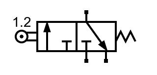

4. Válvula 3/2¶
Una válvula 3/2 tiene 3 vías de aire y 2 posiciones:

Válvula 3/2 normalmente cerrada, en reposo.¶

Válvula 3/2 normalmente cerrada, accionada.¶
Las dos vías de debajo se suelen conectar a la fuente de presión en su izquierda y al escape a la derecha. La vía superior se utiliza para llevar aire a un cilindro de simple efecto o para retirar ese aire durante el reposo.
Esta válvula permite accionar el cilindro y llevarlo al reposo con un solo elemento de control, tal y como se puede comprobar en la siguiente simulación:
- Al accionar la válvula 3/2, el aire pasa directamente desde la fuente de presión hacia el cilindro neumático, por lo que el vástago sale completamente hacia afuera. Este comportamiento es el mismo que tenía una válvula 2/2.
- Al llevar a reposo la válvula 3/2, el aire introducido en el cilindro tiene una vía de escape a través de la válvula, por lo que el cilindro retorna a su posición de reposo. Esto es equivalente a abrir otra válvula 2/2 para permitir el escape de aire.
Válvula normalmente abierta¶
En ocasiones es necesario que la válvula deje pasar el aire cuando está en reposo y que corte el paso de aire cuando se acciona. La válvula con este funcionamiento se denomina Normalmente Abierta y tiene en su símbolo los dos estados intercambiados:

Válvula 3/2 normalmente abierta, en reposo.¶

Válvula 3/2 normalmente abierta, accionada.¶
Accionamientos¶
Las válvulas vistas hasta el momento tienen un accionamiento manual con enclavamiento. Esto significa que la válvula se mueve con la mano y se mantiene en esa posición hasta que volvemos a accionarla manualmente.
Existen otros tipos de accionamientos como el accionamiento por pulsador con retorno a muelle. Este accionamiento mueve la válvula mientras se está pulsando, pero vuelve a su posición de reposo al dejar de pulsar:

Válvula 3/2 accionada por pulsador y retorno a muelle.¶
En el accionamiento por rodillo con retorno a muelle, un rodillo se mueve para accionar la válvula cuando choca con un pistón o con un objeto que se mueve:
{kind=link}

Válvula 3/2 accionada por rodillo y retorno a muelle.¶
En el accionamiento por pilotaje neumático la manera de accionar la válvula es aportando aire a presión en cada uno de sus extremos derecho o izquierdo:

Válvula 3/2 accionada neumáticamente.¶
Ejercicios¶
¿Qué es una válvula neumática 3/2 y de qué partes se compone?
Explica con tus palabras cómo funciona una válvula 3/2 en cada una de sus dos posiciones.
Dibuja una válvula 3/2 normalmente abierta y una válvula 3/2 normalmente cerrada, ambas en reposo.
Dibuja en el siguiente simulador un cilindro de simple efecto accionado por una válvula 3/2 manual con enclavamiento, normalmente abierta.
Para dibujar la válvula normalmente abierta, dibuja una válvula normalmente cerrada (por defecto) y luego elige en el menú
Editar... Volteary al clicar sobre la válvula cambiará su funcionamiento.Explica brevemente cada uno de los 4 accionamientos de una válvula neumática que se han visto más arriba.
Dibuja en el siguiente simulador un cilindro de simple efecto accionado por una válvula 3/2 con accionamiento por rodillo.
Coloca el rodillo al comienzo de la carrera del cilindro y simula el circuito para ver cómo se comporta.
Explica con tus palabras el comportamiento del circuito anterior y por qué funciona de esa manera.